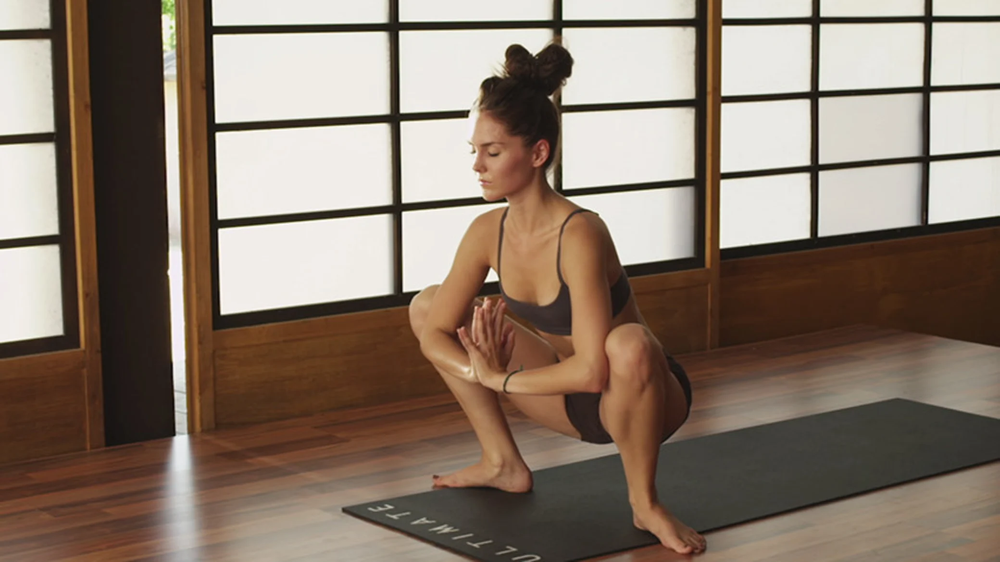

Yoga poses and techniques have been used for centuries as a way to achieve optimal health and well-being. Below are 10 selected from The Ultimate Yogi program, along with descriptions of their therapeutic benefits. Even when you don't have a couple of hours to attend your favorite yoga class, just a few minutes with a couple of postures can be incredibly powerful, especially when combined with breath, intention and presence.
Malasana (Yoga Squat)
This pose is a squatting position with toes out, the heels in, and the hands at prayer position in front of the chest. It's great for pregnant women, as it stretches the calves, inner thighs, relieves back ache and opens the pubic symphysis in the the pelvis.
Half Moon
in this pose, you balance on the right leg and right hand with the the left leg lifted parallel to the floor and the left arm extended straight up. In order to age gracefully, we must challenge our balance regularly. When in a balancing pose like this, the brain lights up like fireworks. It good for the brain, the mind and the nervous system.
Alternate Nostril Breathing

This is a form of yogic breathing that's done in a comfortable seated position that brings equilibrium to the two branches of the autonomic nervous system. It greatly releases stress and anxiety, and also helps to clean the lymphatic system.
Gratitude Meditation

This is a universal form of meditation where you focus on all the things you feel grateful for, which is the perfect antidote for depression.
Camel Pose

In this pose you stand up on the knees, hips width apart. Both hands rest either on the lower back or heels depending on the student's flexibility. The pose increases lung capacity, and stimulates the adrenal, pituitary, pineal and thyroid glands.
Bound Angle

In this pose you sit on the floor with the soles of the feet together, allowing the knees to drop out and toward the floor. The shoulders stack over the hips, and it is optional to lean forward, keeping a straight spine. The pose relieves the symptoms of a woman's menstrual cycle, menopause, and even prostate disorders by circulating energy through the pelvic organs.
Warrior 1
Standing with the feet at least 4 to 4.5 feet apart, the front toes point forward with the back foot on a slight angle, the feet aligned heel to heel distance. The front knee stacks right above the front ankle, with the front thigh parallel to the floor. Both arms extend overhead as the shoulders, chest, and hips attempt to square forward toward the front of the room. This pose is a wonderful stretch for the "mother of all abdominal muscles," the psoas. Psoas tension is often seen displayed in the body through a tight jaw, grinding of the teeth, and general mouth tension. This pose can help stretch the psoas and bring relief to overall tension in the body
Wheel Of Vitality

Standing with the feet wide apart, turn the heels in and point the toes out. Bending the knees out toward the toes, the students squats toward the floor, keeping the knees properly aligned. With the hands at the heart, a circular tai-chi type movement begins: 1) open the arms out and bring the hands back together at the heart, 2) hands are pressed toward the sky, then back down toward the floor 3) hands sweep down, toward back foot and then make a big circle forward, all the way back around 4) reverse the circular movement the opposite way. Repeat this arm motion three times, maintaining the steady squat the entire time. This movement promotes the cardiovascular system, and the movement of blood through body while improving focus and emphasizing the breath.
Half Lord Of The Fishes Pose

Bend the left knee while crossing the right foot over top, with the knee sticking straight up. With the right hand on the floor behind for support, bend the left elbow and place it on the outer right thigh to engage into a deep, thorough twist. Repeat on the other side and make sure that you twist from maximum spinal length. This pose is good for improving digestion by wringing out the digestive organs and system and is a simple twist that can help alleviate back pain by bringing awareness to the low back and helping to unwind muscles of the low back region.
Forearm Plank

Think upper push-up, but on your forearms. With the elbows right under the shoulders and the palms flat to the floor, the back toes tuck so the body is in one line of energy from the crown of the head all the way through the heels. This is a wonderful pose that uses the students' own body weight to create strength in the shoulders and the core muscles. Using your own body weight in yoga to create strength helps to keep the skeletal system strong and helps to prevent osteoporosis.